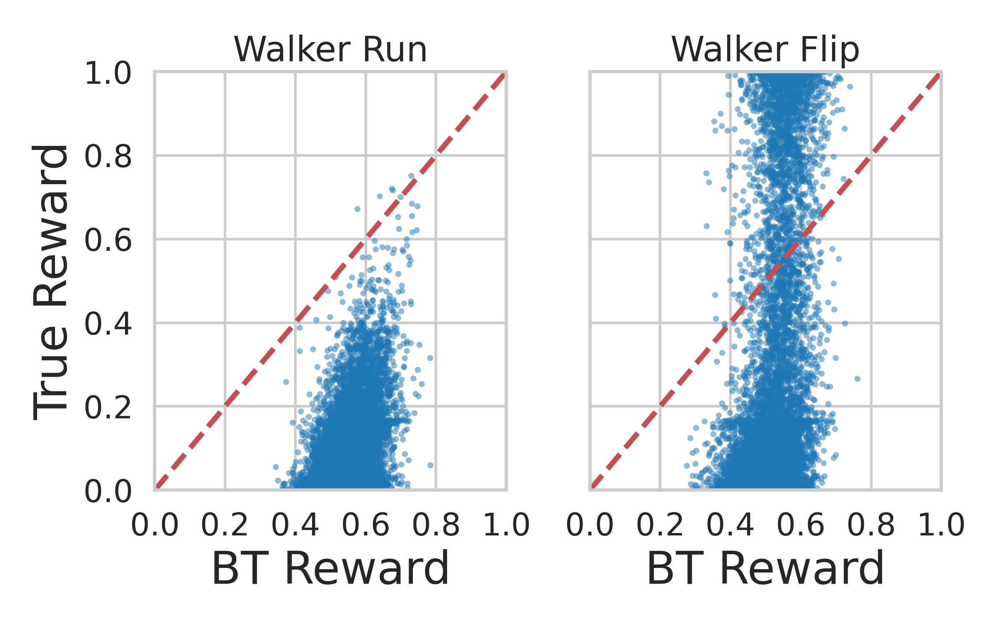
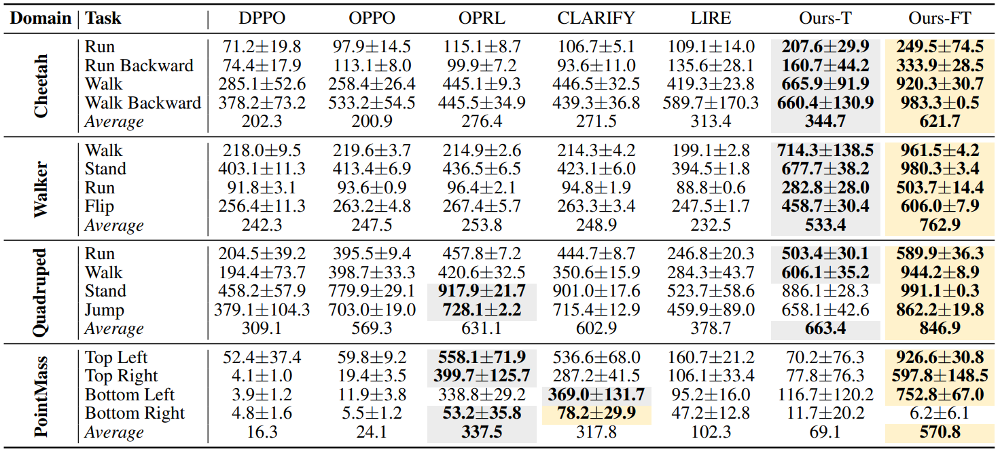
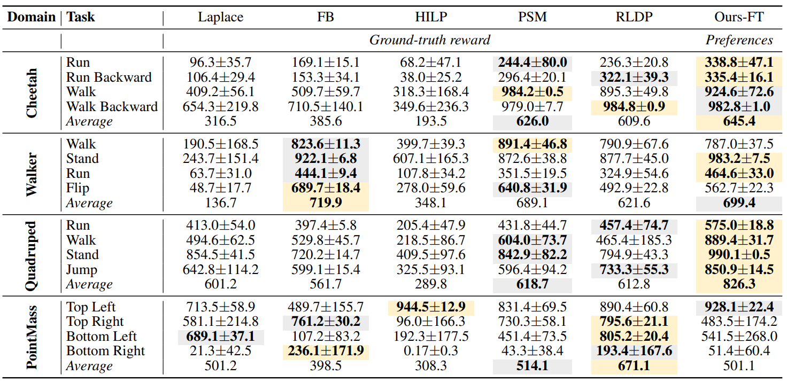
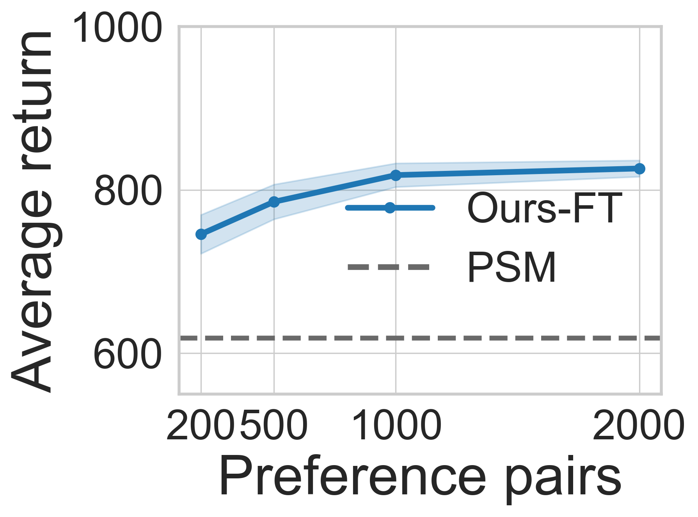
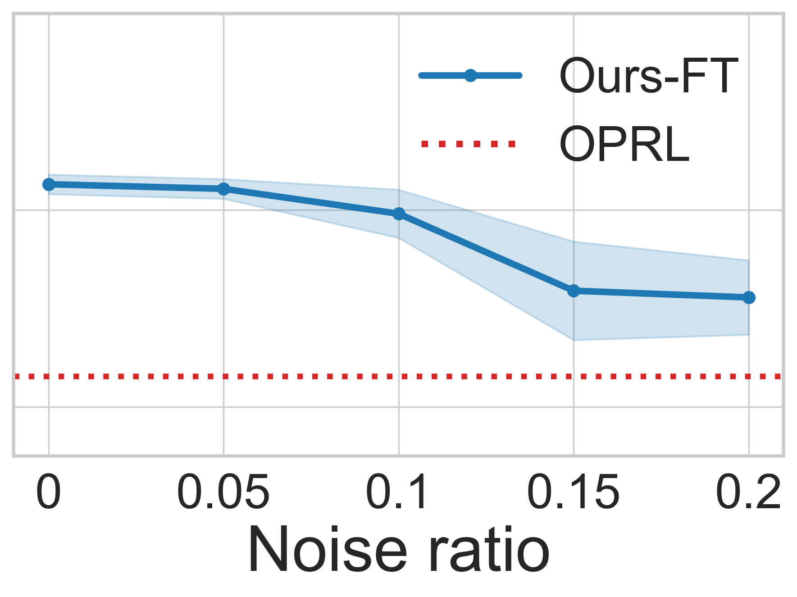

TL;DR. Learn reusable Forward-Backward structure from reward-free data; use preferences to specify the task direction.
Abstract
Preference-based reinforcement learning (PbRL) avoids explicit reward engineering by learning from pairwise human preference feedback. Existing offline PbRL methods typically first learn a reward or preference model from labeled preferences, then perform offline RL on unlabeled data. We revisit offline PbRL through the lens of reward-free representation learning (RFRL), and propose FB-PbRL: a framework that first learns latent successor-measure representations from reward-free offline data, followed by contrastive search and preference-guided fine-tuning.
Through extensive experiments and ablations, FB-PbRL achieves superior preference efficiency over offline PbRL baselines and highlights the potential of connecting RFRL with PbRL as a feedback-efficient solution.
The Bottleneck of PbRL
Limited preferences make reward models overfit and collapse.
Human feedback is expensive and severely limited.
The learned BT reward, a proxy reward trained from pairwise preferences, collapses toward the mid-range and fails to capture the underlying true reward structure.

Reward over-optimization under proxy BT rewards on Walker Run and Walker Flip.
Training Pipeline of FB-PbRL
FB-PbRL adapts Forward-Backward representation learning to offline PbRL by decoupling structure learning from preference-based task specification.
Two Core Components
FB-PbRL uses preferences only where they are most useful: identifying the desired latent task direction and reshaping the representation geometry around that direction.
Latent task specification through $\mathcal{L}_{\mathrm{pref}}$
Under the FB structure, the Bradley–Terry preference loss can be rewritten purely in terms of the latent task vector $z$. Preferred and non-preferred trajectory segments become positive and negative latent directions.
This avoids training a reward model. Instead, FB-PbRL optimizes a low-dimensional task vector, which is substantially simpler than fitting a high-capacity neural reward model from scarce preference labels.
Preference-Guided Fine-Tuning
Pure test-time search can be limited because pre-trained FB representations are task-agnostic. PG-FT adapts the FB latent geometry using $\mathcal{L}_{\mathrm{pref}}$, making task directions easier to identify and exploit.
The final task anchor moves toward high-return, in-distribution regions that the latent-conditioned policy can reliably execute, improving downstream control without explicit reward or preference model learning.

Main Results
Under the PbRL protocol, Ours-T already shows that pretrained FB representations support preference-based task specification; Ours-FT further boosts performance by jointly fine-tuning the representation and task anchor.
Under the zero-shot RFRL protocol, FB-PbRL uses preferences instead of ground-truth reward labels, yet remains competitive with reward-based task specification baselines.

Ours-T denotes test-time task specification, while Ours-FT applies preference-guided fine-tuning.

Zero-shot RFRL baselines use ground-truth rewards at test time, whereas FB-PbRL uses preferences.
Robustness to Limited and Noisy Preferences
FB-PbRL remains effective when preference labels are scarce or imperfect, demonstrating that the learned reward-free representations reduce the burden on human feedback.

Limited preferences. Performance degrades gracefully when reducing the preference budget.

Noisy preferences. FB-PbRL remains robust under moderate preference noise.
Robot Arm Manipulation with Real Human Preferences
FB-PbRL also generalizes to high-dimensional manipulation tasks with real human preference labels. The videos below show the pen-human environment.
LiRE
Baseline result on pen-human.
FB-PbRL (Ours)
Preference-guided FB-PbRL result on pen-human.
BibTeX
@inproceedings{
yang2026from,
title={From Reward-Free Representations to Preferences: Rethinking Offline Preference-Based Reinforcement Learning},
author={Jun-Jie Yang and Chia-Heng Hsu and Kui-Yuan Chen and Ping-Chun Hsieh},
booktitle={Forty-third International Conference on Machine Learning},
year={2026},
url={https://openreview.net/forum?id=sGOmm03F40}
}